Next: Pseudo-Inverse Up: algebra Previous: Centering Matrix
The eigenvalue decomposition of a square matrix
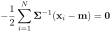 is of great importance and widely
used. However, for an  non-square matrix
non-square matrix  ,
no eigenvalues and eigenvector exist. In this case, we can still
find its singular values and the corresponding left and
right singular vectors, and then carry out
singular value decomposition (SVD).
,
no eigenvalues and eigenvector exist. In this case, we can still
find its singular values and the corresponding left and
right singular vectors, and then carry out
singular value decomposition (SVD).
Theorem: An matrix of rank  can be diagonalized by two orthogonal matrices
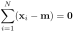 and
can be diagonalized by two orthogonal matrices
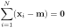 and
 :
:
 (173)
(173)
![${\bf U}=[{\bf u}_1,\ldots,{\bf u}_m]$](img624.svg) is an 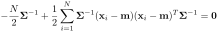 matrix
composed of the orthogonal eigenvectors of the symmetric matrix
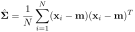, also called the left singular vectors of :
is an 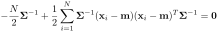 matrix
composed of the orthogonal eigenvectors of the symmetric matrix
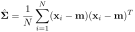, also called the left singular vectors of :
 (174)
(174)
 is the e
igenvalue matrix of .
is the e
igenvalue matrix of .
![${\bf V}=[{\bf v}_1,\ldots,{\bf v}_n]$](img628.svg) is an
is an  matrix
composed of the orthogonal eigenvectors of the symmetric matrix
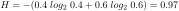, also called the right singular vectors of
:
matrix
composed of the orthogonal eigenvectors of the symmetric matrix
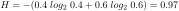, also called the right singular vectors of
:
 (175)
(175)
 (see proof below).
(see proof below).
 is an diagonal
matrix of
is an diagonal
matrix of  non-zero values
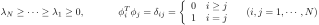, the square roots of the eigenvalues of
or
, defined as the
singular values of :
non-zero values
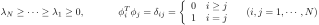, the square roots of the eigenvalues of
or
, defined as the
singular values of :
![$\displaystyle {\bf\Lambda}^{1/2}
=\left[\begin{array}{ccccc}\sqrt{\lambda_1}& ...
...
& \ddots & & &\\ & &\sigma_r & &\\ & & & &
\end{array}\right]={\bf\Sigma}
$](img633.svg) (176)
(176)
Proof:
Pre-multiplying on both sides of the eigenequation of
:
 (177)
(177)
 have the same
eigenvalue matrix , and
have the same
eigenvalue matrix , and  is the eigenvector
matrix of . As the columns (or rows) of are
not normalized, is not orthogonal:
is the eigenvector
matrix of . As the columns (or rows) of are
not normalized, is not orthogonal:
 (179)
by
(179)
by
 , its ith
column is scaled by
, its ith
column is scaled by
 () and
thereby normalized, the resulting matrix becomes orthogonal:
() and
thereby normalized, the resulting matrix becomes orthogonal:
| 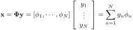 | |||
 |
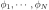 |
 (180)
(180)
 on both sides, we get the SVD of :
on both sides, we get the SVD of :
The SVD is illustrated graphically below for
the two cases of 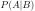 and  :
:
The component form of
 above is
above is
 (182)
(182)
 of
to the
eigenvectors 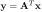 of .
of
to the
eigenvectors 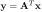 of .
We further consider some special cases:
 is unitary, i.e.,
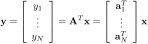, its eigenvalue matrix is
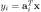, and all singular values are unity
is unitary, i.e.,
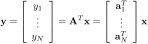, its eigenvalue matrix is
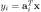, and all singular values are unity  for all .
for all .
 , and its
singular value decompositon is
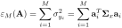,
i.e.,
, and its
singular value decompositon is
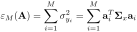,
i.e.,
 (183)
(183)
 can be written as:
can be written as:
 (184)
is the eigenvalue matrix of . We
see that
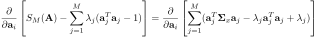, i.e., the singular values
are the absolute values of its eigenvalues
(184)
is the eigenvalue matrix of . We
see that
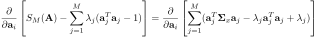, i.e., the singular values
are the absolute values of its eigenvalues
 ,
and the left and right eigenvectors are the same as the eigenvectors
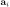.
,
and the left and right eigenvectors are the same as the eigenvectors
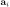.
is normal satisfying
 (e.g., symmetric, Hermitian, unitary, etc.), both and
(e.g., symmetric, Hermitian, unitary, etc.), both and  can be simultaneously diagonalized by their unitary eigenvector matrix
can be simultaneously diagonalized by their unitary eigenvector matrix
 , i.e.,
, i.e.,
 (185)
(185)
 (186)
(186)
 (187)
are simply the modulus
of its eigenvalues
(187)
are simply the modulus
of its eigenvalues
 ().
().
The matrix
 can be
considered as a linear transformation that converts a vector
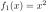 to another vector
can be
considered as a linear transformation that converts a vector
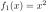 to another vector
 in three steps:
in three steps:
 by the orthogonal matrix
by the orthogonal matrix  :
:
 of 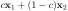 by a factor of 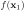
(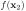):
of 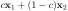 by a factor of 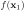
(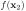):
 by the orthogonal matrix
by the orthogonal matrix  :
:
 (191)
(191)
The figure below illustrates the transformation of the three vertices of
a triangle in 2-D space by a matrix
 ,
which first rotates the vertices by 45 degrees CCW, scale horizontally and
vertically by a factor of 3 and 2, respectively, and then rotate CW by 30
degrees.
,
which first rotates the vertices by 45 degrees CCW, scale horizontally and
vertically by a factor of 3 and 2, respectively, and then rotate CW by 30
degrees.

The SVD has many applications, two of which are considered below.
The SVD equation
and
post-multiplying on both sides, we get the inverse transform:
![$\displaystyle {\bf A}={\bf U}{\bf\Sigma}{\bf V}^T
=[{\bf u}_1,\cdots\cdots\cdo...
...\\ {\bf v}_n^T\end{array}\right]
=\sum_{i=1}^r \sigma_i[{\bf u}_i{\bf v}_i^T]
$](img682.svg) (193)
is represented as a linear combination
of matrices
(193)
is represented as a linear combination
of matrices
![$[{\bf u}_i{\bf v}_i^T]$](img683.svg) weighted by the singular values
weighted by the singular values
 (
( ). We can rewrite both the forward and
inverse SVD transform as a pair of forward and inverse transforms:
). We can rewrite both the forward and
inverse SVD transform as a pair of forward and inverse transforms:
 (194)
matrix can be approximated
by keeping in the summation above only
(194)
matrix can be approximated
by keeping in the summation above only
 terms
corresponding to the
terms
corresponding to the  greatest singular values. The amount of data
can be significantly reduced from to no more than 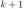.
greatest singular values. The amount of data
can be significantly reduced from to no more than 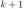.
Also, the pseudo-inverse of any matrix (non-square, not full-rank) can be found given its SVD
 is pseudo-inverse of 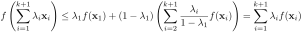, composed
of the reciprocals
is pseudo-inverse of 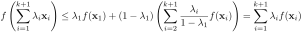, composed
of the reciprocals  of the
of the  singular values along the
diagonal. The pseudo-inverse matrix is needed to find optimal solution
of an inconsistent linear equation system.
singular values along the
diagonal. The pseudo-inverse matrix is needed to find optimal solution
of an inconsistent linear equation system.